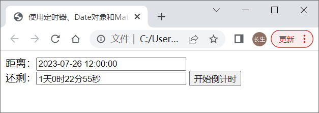

首页 > 编程笔记
JS实现倒计时效果（附带源码和解析）
在电商网站上，我们经常会看到某个商品的促销活动倒计时，这种“倒计时”效果一般是使用 JS 实现的。
JS 实现倒计时效果的原理是：通过 Date 对象分别获取活动开始时间和活动结束时间，然后计算两个时间差，得到的时间差是一个单位为毫秒的数值。通过对该时间差执行一系列的取模、除法等算术运算，同时调用 Math 对象的相关方法，就可将其分别折合为天数、小时数、分钟数和秒数。
对时间差及其折合运算添加定时器后则可以实现时间差的动态变化，一旦时间差等于 0，则清除定时器，使时间差不再变化。
下面通过一个例子来模拟电商网上的倒计时效果。
使用 JS 定时器、Date 对象和 Math 对象实现倒计时效果。
该示例使用了间歇定时器，在该定时器中，代码 Math.floor((iNew-iNow)/1000) 中的
定时器最后获得的时间差是不断变化的，当时间差为非负数时，将其折合成天数、小时数、分钟数和秒数，对应的 JS 代码分别为：
折合后的时间串成一个字符串后显示在第2个文本框中；当时间差为负数时，取消定时器，使文本框中的时间差不再变化。
需要特别注意的是，定时器如果是由事件控制的话，必须先清除定时器，然后再开定时器，否则当事件多次触发时会出现异常，这就是示例中的按钮单击绑定的事件处理函数中的第1行代码即清除定时器的原因。
运行代码，并点击“开始倒计时”按钮后，效果如下：
JS 实现倒计时效果的原理是：通过 Date 对象分别获取活动开始时间和活动结束时间，然后计算两个时间差，得到的时间差是一个单位为毫秒的数值。通过对该时间差执行一系列的取模、除法等算术运算，同时调用 Math 对象的相关方法，就可将其分别折合为天数、小时数、分钟数和秒数。
对时间差及其折合运算添加定时器后则可以实现时间差的动态变化，一旦时间差等于 0，则清除定时器，使时间差不再变化。
下面通过一个例子来模拟电商网上的倒计时效果。
使用 JS 定时器、Date 对象和 Math 对象实现倒计时效果。
<!doctype html>
<html>
<head>
<meta charset="utf-8">
<title>使用定时器、Date对象和Math对象实现倒计时效果</title>
<script>
window.onload = function(){
aInp = document.getElementsByTagName('input');
var iNow = null
var iNew = null
var str = '';
var timer = null;
aInp[2].onclick = function(){
clearInterval(timer);
iNew = (new Date(aInp[0].value)).getTime();
timer = setInterval(function(){
iNow = (new Date()).getTime();
t = Math.floor((iNew-iNow)/1000);
if(t >= 0){
str = Math.floor(t/86400)+'天'+Math.floor(t%86400/3600)+'时'+Math.floor(t%86400%3600/60)+'分'+t%60+'秒';
aInp[1].value = str;
}else{
clearInterval(timer);
}
},1000);
};
};
</script>
</head>
<body>
距离：<input type="text" size="30" value="2023-07-26 12:00:00"><br>
还剩：<input type="text" size="30">
<input type="button" value="开始倒计时">
</body>
</html>
在倒计时时，结束时间是固定的，但开始时间是不断变化的，所以，对倒计时中的开始时间需要使用定时器来动态获取。该示例使用了间歇定时器，在该定时器中，代码 Math.floor((iNew-iNow)/1000) 中的
iNew-iNow得到一个单位为毫秒的时间差，(iNew-iNow)/1000将时间差换算为可能包含小数的秒值，使用 Math.floor() 对该秒值进行向下取整运算得到一个整数的秒值。定时器最后获得的时间差是不断变化的，当时间差为非负数时，将其折合成天数、小时数、分钟数和秒数，对应的 JS 代码分别为：
- Math.floor(t/86400)
- Math.floor(t%86400/3600)
- Math.floor(t%86400%3600/60)
- t%60
折合后的时间串成一个字符串后显示在第2个文本框中；当时间差为负数时，取消定时器，使文本框中的时间差不再变化。
需要特别注意的是，定时器如果是由事件控制的话，必须先清除定时器，然后再开定时器，否则当事件多次触发时会出现异常，这就是示例中的按钮单击绑定的事件处理函数中的第1行代码即清除定时器的原因。
运行代码，并点击“开始倒计时”按钮后，效果如下：

关注公众号「站长严长生」，在手机上阅读所有教程，随时随地都能学习。内含一款搜索神器，免费下载全网书籍和视频。

微信扫码关注公众号